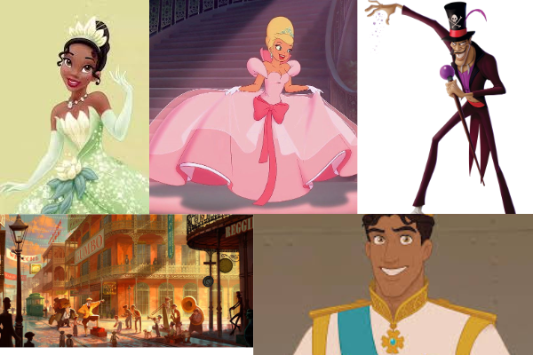
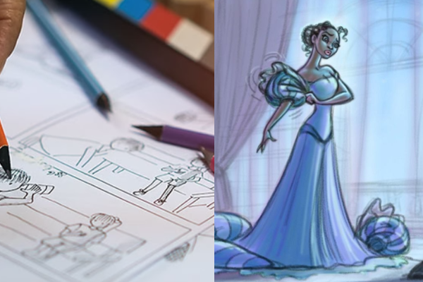

La princesa y el sapo
ARTE



Paleta de colores
Esta compañia es conocida por ser una de las principales empresas de entretenimiento a nivel mundial, ha evolucionado desde su fundación en 1923, destacándose en la creación de películas, parques temáticos y medios de comunicación. Conocida por su innovación en animación, Disney fue pionera en películas animadas y ha producido clásicos que van desde Blancanieves y los siete enanitos (1937) hasta películas modernas que han capturado audiencias de todas las edades.
Uno de los hitos más significativos en la historia reciente de Disney fue el estreno de "La Princesa y el Sapo" en 2009. Esta película marcó un regreso importante a la animación tradicional en 2D, tras un largo período en el que la compañía se había enfocado principalmente en la animación en 3D. "La Princesa y el Sapo" no solo evocó la nostalgia por el estilo clásico de Disney, sino que también introdujo una narrativa contemporánea que reflejaba la diversidad y la independencia de sus personajes, lo que la convirtió en una obra significativa en el repertorio de la compañía.
Disney creó "La Princesa y el Sapo" para mostrar su compromiso con la innovación y la evolución. Al incorporar elementos afroamericanos y ofrecer un nuevo modelo de heroína en Tiana, Disney se alineó con los cambios sociales contemporáneos y la demanda de representaciones más inclusivas en el cine. Este enfoque no solo revolucionó el interés en la animación tradicional, sino que también permitió a Disney conectar con una audiencia más amplia, demostrando que la diversidad puede ser un motor poderoso para la narración de historias.
La Walt Disney Company ha transcurrido un largo trayecto desde su origen en 1923, donde se ha establecido como un líder en el ámbito del entretenimiento. Dado la innovación en la animación, el regreso a las raíces con "La Princesa y el Sapo" y su compromiso con la diversidad, Disney ha demostrado que puede adaptarse a los tiempos y mantenerse relevante en la cultura contemporánea. Su legado continúa impulsando a nuevas generaciones, consolidando su posición como un referente en el ámbito del entretenimiento internacional.
"La vida puede ser un sueño, pero los sueños no se hacen realidad por sí solos."
Copyright © 2024
USO EDUCATIVO / NO AUTORIZADO USO COMERCIAL